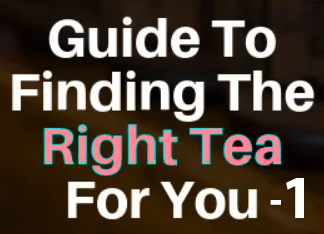

The Sri Lankan Twist to Tea
Dilmah is unique;
a brand that is founded on a passionate commitment to quality and authenticity in tea,
it is also a part of a philosophy that goes beyond commerce in seeing business as a matter of human service.
Tea is Nature’s gift to mankind. A beverage that heals, protects and refreshes, it is also infinite in variety,
changing subtlety with the natural alchemy of sunshine, soils, wind, rain and temperature.
That beautiful variety in tea is as much a challenge as a deliciously indulgent reward for whilst nature gives us
a tea to suit every mood, and desire, she demands expertise in understanding and selecting the finest.
That expertise can only come from passionate commitment to tea.
-CEO DILMAH CEYLON TEA COMPANY PLC-
| Company Name | Founded | Address | Products | Telephone |
|---|---|---|---|---|
| Dilmah Ceylon Tea Company PLC | 1988 | Dilmah Ceylon Tea Company PLC, 111 Negombo Road, Peliyagoda, Sri Lanka. | Tea Packets, Tea Bags, Tea in Bulk, Ceylon Green Tea, Iced Tea, Tea Cordial | +(94) 11-4822000 +(94) 11-2933070 |
Every day thousands of people in over thirty two countries enjoy the flavours of the tea we produce.
Over 100 years ago, the company that was eventually to become Anverally & sons (Pvt.) Ltd.,
was founded by a man with a vision. This man was my great great grandfather Mr. Anverally.
His vision was to establish the island of Sri Lanka as a major exporter of some of the finest pure teas to the rest of the world.
A century later, his vision has been made a reality by his successors.
Today Anverally and Sons (Pvt.) Ltd., is still very much a family concern and exports some of the finest teas in the world to 32 countries in Europe,
Asia, CIS States, and the Middle East. With close connections to a number of plantation companies and tea estates around the island,
Anverally & Sons have some of the most experienced tea tasters, vital for the important process of blending that makes Ceylon Tea so
famous around the world today.
We do provide private labels and bulk tea to buyers,
we have always matched the right quality which our customers required.
We do the packaging, graphic design for your requirement.
We have been supplying Ceylon Tea for buyers since 1890.
- CEO Anverally & Sons PVT LTD-
| Company Name | Founded | Address | Products | Telephone |
|---|---|---|---|---|
| ANVERALLY & SONS PVT LTD | 1890 | No.17 Dr.Lestor Jems Piris Mawatha Colombo 5 | Tea Bags, Loose Tea, Iced Tea, Pre Mixes, Bulk Tea | +94 11 2 555594-7 |
We believe in reflecting our love for tea into every other aspect of our business too.
We love keeping our environment natural and our people happy.
It is our commitment to be green and ethical in business.
That is why at Amazon Teas, we only buy organic produce and that too, only grown by small farmers, our Superheroes.
Our delicate quantities of fresh organic produce carry with them all the goodness of Mother Earth.
The art of Tea farming practiced by the small plantation Superheroes involves a meticulous method
of maximizing produce without the use of chemical fertilizers, thus maintaining the natural
vibrancy of the soils. More impressively, our Superheroes minimize their
carbon footprint through active erosion prevention and waste management to ensure the sustainability of our planet.
And for their admirable work,
it is only fair that we pay them a premium on top of the Fair-trade price for their produce. Now, with each new season,
the farmers are super excited to farm more and more organic.
All this nature-love and freshness transcends across the business and reinforces our first and foremost priority;
the well being of everyone. This includes our resourceful planet,
our suppliers and most importantly, our Tea lovers.
- CEO Amazon Pvt LT-
| Company Name | Founded | Address | Products | Telephone |
|---|---|---|---|---|
| AMAZON TRADING PVT LTD | 2000 | No.257,Siri Dhamma Mawatha Colombo 10 | Sachet, String & Tag, Pyramid, Looseleaf, POS | 0114 734 111 |
Established in 1893 in Sri Lanka. Finlays is a globally integrated tea company with the expertise
from the "Bush to the Cup".In addition to our flagship brands Alwazah Tea & Listikan"we are also renowned exporters of private labels.
Our state of the art production facility is ISO 9001: 2000, ISO 14001:, 2004, ISO 22000, and BRC certified.
- CEO FINLAYS COLOMBO PLC-
| Company Name | Founded | Address | Products | Telephone |
|---|---|---|---|---|
| FINLAYS COLOMBO PLC | 1974 | Finlay House 186, Vauxhall Street Colombo 00200 | Flavoured Tea, Black Tea, Tea Packets, Tea in Bulk, Green Tea, Tea Bags | 0114 725 200 |
|  |